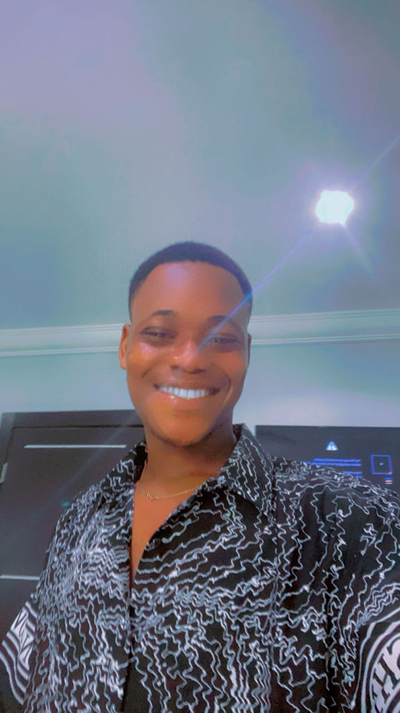

Chigozie Magnus Ejiogu

Summary
I am a an upcoming front-end developer who wants to attain great height in the field of
web development.
Education
- Bachelor of Science, Computer Science-Abia State University Uturu (2017-2021)
Work Experience
Skills
- Microsoft Office Suite: ⭐⭐⭐⭐⭐
- Web Development: ⭐⭐⭐⭐
- Graphic Design: ⭐⭐⭐
Awards and Certifications
- Certificate in Web Design. (August 2020)
Other